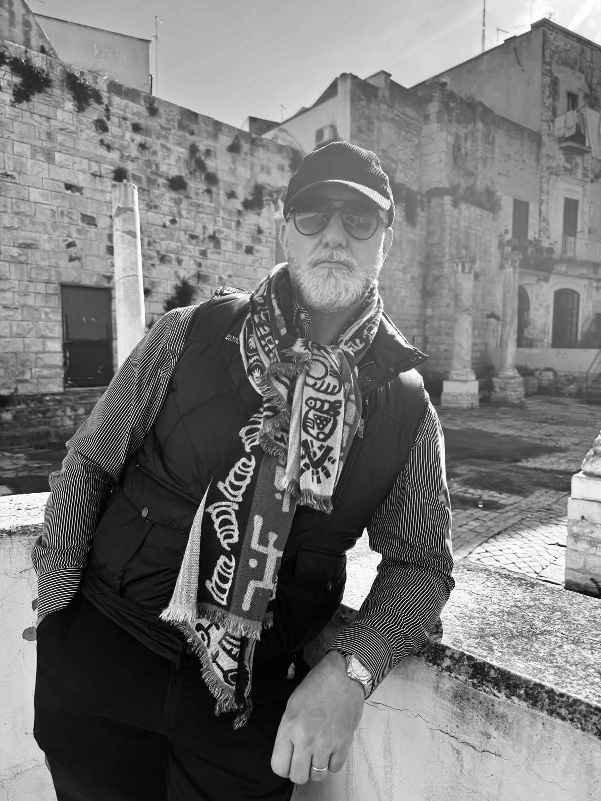

Partir du détail, puis revenir à la ville
Ce site vient d’une habitude de regard plus que d’un programme. En grandissant en Belgique, certains signes étaient déjà là. Une porte plus travaillée qu’ailleurs, une verrière aperçue depuis le trottoir, un angle de façade qui retenait la lumière d’une manière singulière. Longtemps, ils ont précédé les noms.
L’Art Nouveau et l’Art Déco sont entrés ainsi, non comme des catégories savantes, mais comme une présence diffuse dans la ville. Le site prolonge cette expérience. Il rassemble des lieux, des images et des notes qui essaient de rester fidèles au terrain, au rythme de la marche, à ce que l’œil comprend avant même que la documentation soit complète.
Il ne s’agit pas de tout couvrir ni de transformer chaque sujet en démonstration. Certaines pages tiennent par un bâtiment majeur, d’autres par une simple façade ou par un détail qui réoriente la rue. Cette variation fait partie du projet. Elle permet de garder une échelle juste, et de ne pas demander plus aux images qu’elles ne donnent réellement.
Le texte intervient alors pour clarifier, pour relier, parfois pour laisser une mémoire s’installer. Pas pour combler. Quand une donnée manque, elle reste à confirmer. Quand un lieu résiste, il garde sa part d’ombre. C’est à ce prix que la voix du site peut rester stable.
Méthode éditoriale
Une rigueur factuelle discrète, sans appareil inutile
Le site reste une publication d’auteur. Il ne cherche pas à mimer une institution, mais à rendre visibles quelques repères simples: ce qui est observé, ce qui est vérifié, ce qui reste encore à confirmer.
Méthode
Partir du terrain, puis cadrer
Les textes partent d’abord d’une lecture de rue, d’une façade, d’un seuil, d’un détail qui tient réellement devant l’œil. Les repères factuels visibles dans les articles sont ajoutés quand ils peuvent être maintenus avec netteté.
Sources
Des appuis choisis, pas un appareil de notes
Quand une citation, une datation, un nom d’auteur ou une adresse sont suffisamment établis, ils sont intégrés au corpus. Les références les plus utiles apparaissent dans les articles; le reste n’est pas surjoué.
Limites
Ne pas combler ce qui manque
Certaines données restent partielles. Dans ce cas, elles demeurent signalées comme à confirmer. Le site préfère une lacune explicite à une précision incertaine.
Corrections
Corriger sans alourdir
Un signalement factuel utile, une précision sourcée, un crédit d’image à compléter peuvent être transmis via Instagram. Le point de contact éditorial du projet reste volontairement simple: @artnouveauetdeco.
Contact éditorial
Instagram prolonge le site par les photographies, les repérages et les notations de terrain. C’est aussi le canal de contact éditorial le plus direct pour une correction, une précision factuelle ou un crédit à compléter.
@artnouveauetdeco